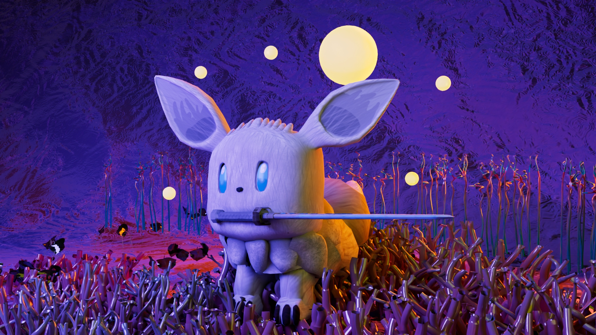

3D ACTION ADVENTURE / WAVE-BASED SURVIVAL
FURRY GUARDIAN
การผจญภัยของ "Furry" ผู้กล้าครึ่งสัตว์ในหุบเขาลึกลับ เอาชีวิตรอดจากคลื่นศัตรูที่ถูกปลดปล่อยจากศาลเจ้าโบราณ (The Altar)

KEY VISUAL: FURRY THE GUARDIAN WITH SWORDMOBILE GAMEPLAY RUNTIME PREVIEW
* ทดสอบระบบควบคุมสัมผัสบน Mobile Touch Controls (Unity Simulator) รองรับคอมโบโจมตี, ท่าไม้ตาย, หลบหลีก และบล็อกดาบ
3D RIGGING & ANIMATION PIPELINE
กระบวนการทำ Bone Rigging, จัดท่า Idle, Walk Cycle และเซ็ตจุดคาบดาบใน Autodesk Maya:
IDLE POSE & CONTROLLERS
วางโครงสร้างกระดูกหางและใบหู พร้อมท่าเตรียมสู้
WALK & RUN CYCLE
เพนต์น้ำหนักกระดูก Skin Weight ให้ขนฟูเคลื่อนไหวสมจริง
ATTACK COMBO POSE
การหมุนตัวฟันดาบจังหวะคอมโบโจมตี
LEVEL DESIGN & SYSTEM DEVELOPMENT
.png) SCENE VIEW: AI NAVMESH & OCCLUSION CULLING
SCENE VIEW: AI NAVMESH & OCCLUSION CULLING
.png) UI SYSTEM: MOBILE CONTROLLER & WAVE SYSTEM
UI SYSTEM: MOBILE CONTROLLER & WAVE SYSTEM
 INTERACTION: BONFIRE SAVE & THE ANCIENT ALTAR
INTERACTION: BONFIRE SAVE & THE ANCIENT ALTAR
CORE GAMEPLAY MECHANICS
CHARACTER CONTROL
- 3D Free Movement: วิ่ง กระโดด และหมุนตัวอิสระ
- Stamina Gauge: ใช้พลังงานเมื่อ Sprint หรือป้องกัน
COMBAT FEEDBACK
- 3-Step Combo: ฟันคอมโบ 3 จังหวะต่อเนื่อง
- Heavy Attack: ท่าฟันหมุนตัวรอบทิศ
- HitStop & Camera Shake: ฟีดแบ็กหยุดเวลาและกล้องสั่น
SURVIVAL & ECONOMY
- Wave Spawner: ศัตรูบุกเป็นระลอกตามความยาก
- 5-Slot Inventory: กระเป๋า 5 ช่องรองรับ Stacking
- Loot Drops: เหรียญและยาฟื้นฟูเลือด/พลังงาน
SYSTEM ARCHITECTURE
- JSON Save/Load: บันทึกค่าสถานะและตำแหน่งพิกัด
- Cross-Platform: โครงสร้างรองรับ PC และ Mobile
DEVELOPMENT ROADMAP
เพิ่มศัตรูรูปแบบใหม่และระบบบอสประจำด่าน (Boss Encounter)
ระบบ Key & Portal Unlock ปลดล็อกประตูมิติสู่โซนใหม่
ระบบอัปเกรดค่าสถานะและต้นไม้ทักษะ (Skill Tree System)
ระบบเปลี่ยนชุดเกราะและคอสตูมตัวละคร (Costumes & Customization)